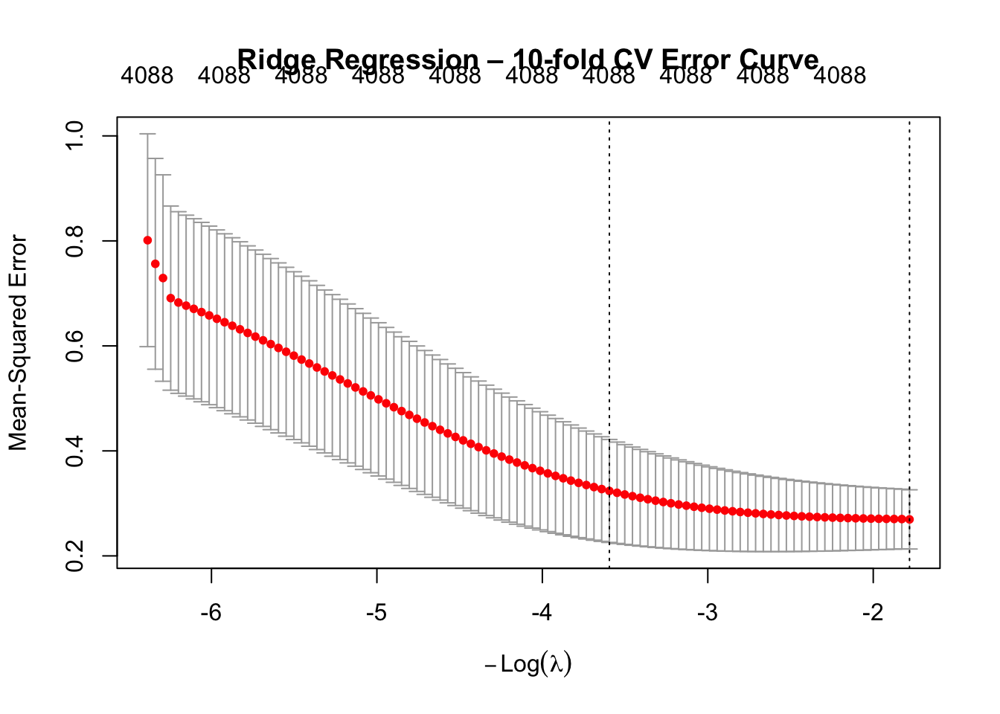
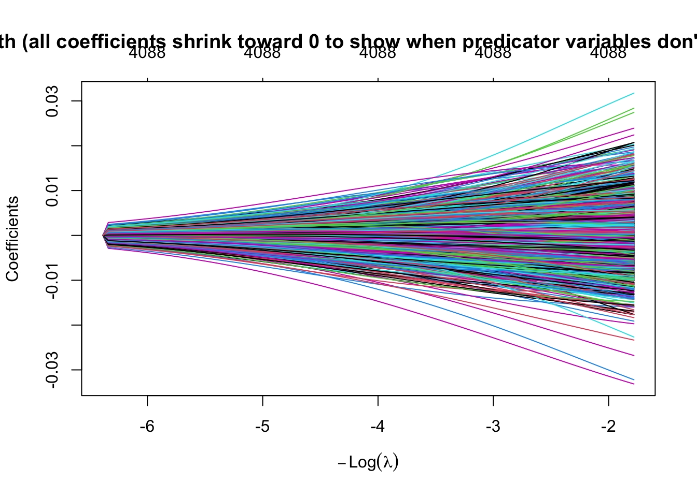
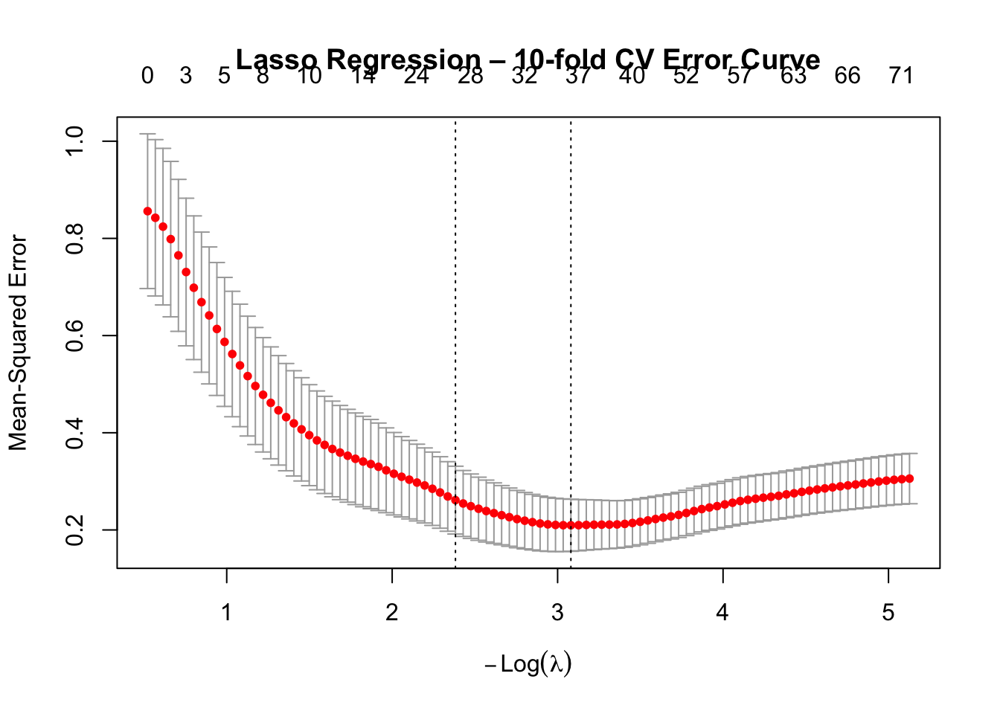
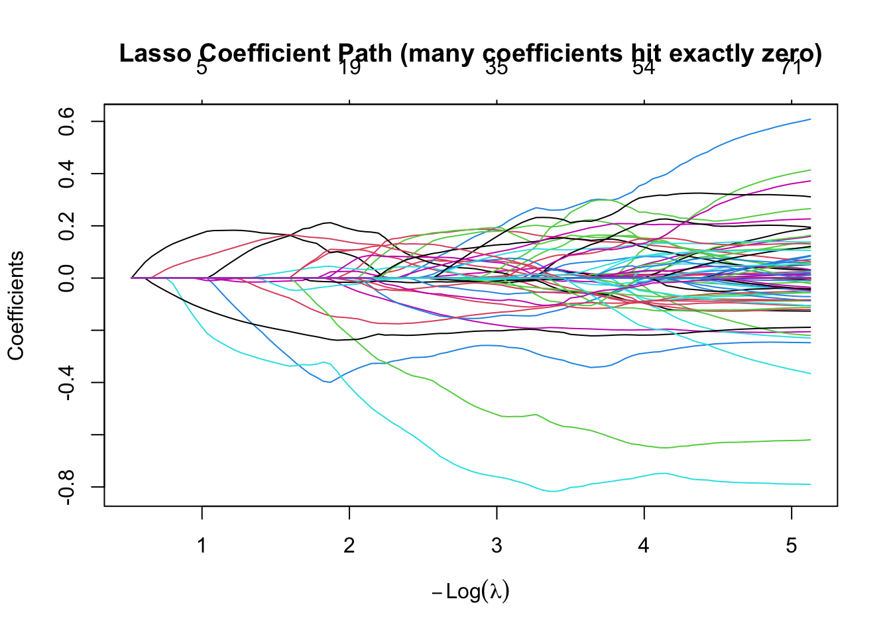
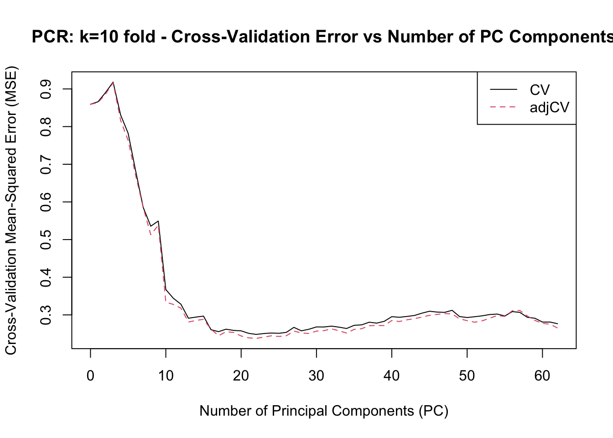

# installing the packages
#install.packages("glmnet")
#install.packages("pls")
#install.packages("hdi")
#install.packages("lmtest")
# loading and using the packages in the program
library(glmnet) # contains the methods and functions for ridge, lasso, elastic net + cv.glmnetLoading required package: MatrixLoaded glmnet 5.0library(pls) # contains the methods and functions for PCR (principal component regression)
Attaching package: 'pls'The following object is masked from 'package:stats':
loadingslibrary(lmtest)Loading required package: zoo
Attaching package: 'zoo'The following objects are masked from 'package:base':
as.Date, as.Date.numeric#library(hdi)
# loading the riboflavin dataset
d1 <- readRDS("data/riboflavin.rds")
# d1 <- readRDS("/Users/Mzmz12/Documents/UVA Data Science Online Masters/DS6021_Predictability_Modeling/Module7_Linearmodel_≠_linear_relationship/riboflavin.rds")
# extracting the x and y values
x <- d1$x # 71 × 4088 matrix. n = 71, p = 4088
y <- d1$y # length-71 vector. n = 71
# extracting the column names
x_column_names <- colnames(x)
# setting the seed for reproducibility
set.seed(123)
#Problem 1. Confirm that OLS cannot create a unique solution for this dataset.
# Attempt to fit a linear model using lm() and report what happens.
# How many coefficients does R return as NA, and why?
# fitting the OLS model with y values to the x values will not work
# due to how x <- d1$x has the dimensions of 71 × 4088 matrix. n = 71, p = 4088
# and p > n = 4088 > 71 violates the OLS requirements for a unique solution
# ols_fitted_model <- ols(y ~ x)
# fitting the y values to the x values in a linear model
# this will work regardless of 𝑝 > 𝑛 --> rank(X) < p --> due to how d1$x has the dimensions of 71 × 4088 matrix. n = 71, p = 4088
# which is 4088 > 71 that agrees with the lm() requirements for a non-unique solution and
# due to the rank(x) < p which is 71 < 4088 which is true then lm() assures that there is a non-unique solution and that the output non-matching
# coefficients from y to x will be NA
# fitting the y values to the x values in a linear model
linear_fitted_model <- lm(y ~ x)
# calculating the linear algebra rank
linear_rank <- qr(x)$rank
# Count how many coefficients are NA
number_of_na_coefficients_in_linear_model <- sum(is.na(linear_fitted_model$coefficients))
cat("Number of coefficients within the Linear Model combination of y to x that returns as NA:", number_of_na_coefficients_in_linear_model, "\n")Number of coefficients within the Linear Model combination of y to x that returns as NA: 4018 # The reason why we are getting NA is because the lm() requirements to have a unique solution are not met.
# This is evidenced through how this dataset has 71 observations --> n = 71 and 4088 predictors --> p = 4088.
# Due to these n and p values, the lm() requirements to have a unique solution are not met and the full column rank
# of the design matrix X is not correct due to p > n = 4088 > 71. It is also important to note that the requirement
# of rank(x) < p being met due to 71 < 4088 that makes X^T * X singular and prevents OLS from having a unique solution.
# It is even important to realize that when the design matrix X is fitted to Y via lm(y ~ x), R uses QR decomposition and
# any predictor that is linearly dependent on others is dropped. The coefficients for these dropped predictors appear as NA.
# So, the NA values calculated here is only a result of the many dependent or non-ranked columns in this QR composition linear model
# fitting of y to x will automatically assign NA values to those columns values.
# Problem 2. Fit ridge regression using glmnet (alpha = 0). Select lambda λ
# via 10-fold cross-validation. Report λmin and λlse (LSE). Plot the Cross Valdidation (CV)
# curve with the two vertical lines. How does CV-MSE change as lambda λ increases?
# Ridge Regression: β(ridge) = arg β min ||Y - Xβ||^(2, 2) + λ ||β||^(2, 2)
# where λ > 0 is a tuning parameter (penalty) that controls the amount of shrinkage.
# The first term is the OLS loss where λ --> 0, then the ridge regression reduces the OLS loss.
# the second term penalizes the large coefficients of this regression line and as λ --> infinity,
# then this ridge regression gets closer to 0 (penalty).
# L2 penalty (ridge regression): ||x|| = x^t * x = √(x1 ^ 2 + x2 ^ 2 + ... + xd ^ 2)
# β^(LSE) = (X^T * X)^−1 * X^T * y
# X = design matrix of predictors,
# y = vector of observed responses,
# β^(LSE) = estimated regression coefficients.
# Fit ridge regression using glmnet (alpha = 0, fold cross-validation = 10).
cv_10_ridge <- cv.glmnet(x, y, alpha = 0, nfolds = 10, type.measure = "mse")
# Plot the Cross Valdidation (CV) curve with the two vertical lines.
plot(cv_10_ridge, main = "Ridge Regression – 10-fold CV Error Curve")
# Getting the LSE and min lambda values
lambda_min_ridge <- cv_10_ridge$lambda.min
lambda_1se_ridge <- cv_10_ridge$lambda.1se
cat("Selected lambda (λ) (min CV-MSE):", round(lambda_min_ridge, 6), "\n")Selected lambda (λ) (min CV-MSE): 5.934162 cat("lambda.1se:", round(lambda_1se_ridge, 6), "\n\n")lambda.1se: 36.41147 # From the ridge regression plot that is produced from this code, we can witness how the Cross Valdidation (CV) Mean Squared Error (MSE)
# curve that describes the diference between this model's y values and this Riboflavin's y production values as a result of their relationship to their x values
# as the lambda λ increases or decreases along the -log(λ) x axis. In this case, the Cross Valdidation (CV) Mean Squared Error (MSE) curve is a downward sloping curve
# that is a result of the ridge regression model's ability to reduce the bias in the y values as the lambda λ increases. This decrease of bias is reflecting in how
# when the lambda λ is lower in value (such as -(log(λ=6))) then the bias of y is high due to the large difference in the MSE value at this point and how this MSE value
# difference seems to be getting smaller as the lambda λ gets higher in value (such as -(log(λ=1 or λ=0))) and thus the bias in the y values decreases. It is also important
# to note that this MSE value difference also reflects the changes in the variance of the y values as the lambda λ goes along the x axis. So, the variance of the MSE value difference
# is at its highest with the y value is biased at -(log(λ=6))) and tends to get smaller as the lambda λ decreases and moves along with x axis to get to the lowest variances at
# -(log(λ=1 or λ=0)). Finally, the penalty or shrinkage of the ridge regression model is reflected in how the MSE value difference is getting smaller as the lambda λ goes along the x axis.
# Problem 3. Plot the ridge coefficient path (
# on the x-axis, coefficient values on the y-axis).
# Describe qualitatively what happens to the coefficients as
# increases. Does any coefficient reach exactly zero?
plot(cv_10_ridge$glmnet.fit,
xvar = "lambda",
label = FALSE,
main = "Ridge Coefficient Path (all coefficients shrink toward 0 to show when predicator variables don't effect the 𝑦 outcome)")
# L2 penalty (ridge regression): ||x|| = x^t * x = √(x1 ^ 2 + x2 ^ 2 + ... + xd ^ 2)
# From this ridge regression plot and its coefficient pathway on the y axis,
# we can see how the 𝛽 coefficients values are going from smaller (𝛽 = 0.0 --> no effect on the predicted y outcomes) to the higher
# (𝛽 = 0.02 --> some to a lot of effect on the predicted y outcomes) as the lambda λ goes along the x axis. In this case, the coefficient values are getting
# bigger and you can tell from the lines in the plot that the predict y value outcomes are heavily influenced by 𝛽 coefficient as we move along the lambda λ values along the x axis.
# Thus, the coefficient values are getting quantitatively bigger and the variances of these predicted y values that derives from the linear combinations of these increasing coefficients
# to their x predictor variables are along getting quantitatively bigger and more diverse as we move along the lambda λ x axis values.
# The only two things to note in this case, is that the coefficient of these predicted y values and all of these data lines actually starts at 0.0 when the lambda λ value is at its highest
# -log(λ > -6). The second thing is that the coefficient values of this plot seem to be kept within a small range of values due to
# the penalties and loss functions that are being used to keep the coefficients from getting too large and imposes the L2 penalty on the ridge regression model to keep the coefficent pathways smooth as it goes from zero to larger values.
# As reflected by this equation, Loss = min𝛽 * ||y - x𝛽||^2 + 𝜆 ∑ 𝛽^2j
# Problem 4. Fit lasso regression (alpha = 1) and select λ
# via 10-fold CV. At λlse,
# how many gene expression features are retained
# (non-zero coefficients)? Plot the coefficient path and the
# CV error curve.
# Fit lasso regression
cv_lasso <- cv.glmnet(x, y, alpha = 1, nfolds = 10, type.measure = "mse")
# Getting the LSE and min lambda values
lambda_1se_lasso <- cv_10_ridge$lambda.1se
lambda_min_lasso <- cv_lasso$lambda.min
# Number of non-zero gene expression features at lambda.lse
coef_lasso <- coef(cv_lasso, s = "lambda.1se")
fianl_num_retained_lasso <- sum(coef_lasso[-1, ] != 0)
# Print the Lambda
cat("lambda.1se (lasso):", round(lambda_1se_lasso, 6), "\n")lambda.1se (lasso): 36.41147 cat("Number of retained (non-zero) gene expression features at lambda.lse:",
fianl_num_retained_lasso, "\n\n")Number of retained (non-zero) gene expression features at lambda.lse: 25 #Plot CV error curve with the two vertical lines
plot(cv_lasso, main = "Lasso Regression – 10-fold CV Error Curve")
# Coefficient path plot
plot(cv_lasso$glmnet.fit,
xvar = "lambda",
main = "Lasso Coefficient Path (many coefficients hit exactly zero)")
# Problem 5. Fit an elastic net with α ϵ {0.25, 0.5, 0.75}.
# For each α, record the minimum CV-MSE.
# Create a small table showing (α, λmin, min CV-MSE).
# Which α yields the lowest CV-MSE?
# How does the number of selected features compare to lasso?
# Setting the alpha, min lambda, min CV-MSE, and number of selected elastic net features
alphas <- seq(0.25, 0.75, by = 0.25)
min_cv_mse_elastic_net <- numeric(length(alphas))
lambda_min_elastic_net <- numeric(length(alphas))
num_selected_elastic_net <- numeric(length(alphas))
# Fitting elastic net through looping and appending the values to the vectors
for (i in seq_along(alphas)) {
cv_elastic_net <- cv.glmnet(x, y, alpha = alphas[i], nfolds = 10, type.measure = "mse")
min_cv_mse_elastic_net[i] <- min(cv_elastic_net$cvm)
lambda_min_elastic_net[i] <- cv_elastic_net$lambda.min
coefs <- coef(cv_elastic_net, s = cv_elastic_net$lambda.min)
num_selected_elastic_net[i] <- sum(coefs[-1, ] != 0)
}
# creating a final data frame table
results_elastic_net <- data.frame(
alpha = alphas,
min_lambda = round(lambda_min_elastic_net, 6),
min_CV_MSE = round(min_cv_mse_elastic_net, 6),
num_nonzero_features = num_selected_elastic_net
)
# printing the results and comparing the number of selected features
print(results_elastic_net) alpha min_lambda min_CV_MSE num_nonzero_features
1 0.25 0.167457 0.203687 69
2 0.50 0.079923 0.222400 55
3 0.75 0.040306 0.214340 48cat("The number of selected features from Elastic Net in comparison with Lasso:\n")The number of selected features from Elastic Net in comparison with Lasso:for(i in seq_along(num_selected_elastic_net)){
cat(" The Elastic Net (alpha=", alphas[i], " and selected ", num_selected_elastic_net[i], " features.\n")
cat(" The Lasso (alpha=1) selected", fianl_num_retained_lasso, "features.\n")
cat("The Selected Features of Elastic Net ", num_selected_elastic_net[i], " is greater than (" , num_selected_elastic_net[i] > fianl_num_retained_lasso, ") the Selected Features of Lasso ", fianl_num_retained_lasso, ".\n\n")
cat("The Selected Features of Elastic Net ", num_selected_elastic_net[i], " is leser than (" , num_selected_elastic_net[i] < fianl_num_retained_lasso, ") the Selected Features of Lasso ", fianl_num_retained_lasso, ".\n\n")
cat("The Selected Features of Elastic Net ", num_selected_elastic_net[i], " is equal to (" , num_selected_elastic_net[i] == fianl_num_retained_lasso, ") the Selected Features of Lasso ", fianl_num_retained_lasso, ".\n\n")
} The Elastic Net (alpha= 0.25 and selected 69 features.
The Lasso (alpha=1) selected 25 features.
The Selected Features of Elastic Net 69 is greater than ( TRUE ) the Selected Features of Lasso 25 .
The Selected Features of Elastic Net 69 is leser than ( FALSE ) the Selected Features of Lasso 25 .
The Selected Features of Elastic Net 69 is equal to ( FALSE ) the Selected Features of Lasso 25 .
The Elastic Net (alpha= 0.5 and selected 55 features.
The Lasso (alpha=1) selected 25 features.
The Selected Features of Elastic Net 55 is greater than ( TRUE ) the Selected Features of Lasso 25 .
The Selected Features of Elastic Net 55 is leser than ( FALSE ) the Selected Features of Lasso 25 .
The Selected Features of Elastic Net 55 is equal to ( FALSE ) the Selected Features of Lasso 25 .
The Elastic Net (alpha= 0.75 and selected 48 features.
The Lasso (alpha=1) selected 25 features.
The Selected Features of Elastic Net 48 is greater than ( TRUE ) the Selected Features of Lasso 25 .
The Selected Features of Elastic Net 48 is leser than ( FALSE ) the Selected Features of Lasso 25 .
The Selected Features of Elastic Net 48 is equal to ( FALSE ) the Selected Features of Lasso 25 .# From this data frame of all (α = alphas, λmin = lambda mins, min CV-MSE = minimum cross validation mean squared error, and num_nonzero_features = number of nonzero features extracted from the lambda min values),
# it would be easy to witness that the alpha that yields the lowest CV-MSE is the alpha of 0.25 where the lowest CV-MSE value of 0.203687.
# Also, it is easy to interpret that the number of selected features from the elastic net is always greater than the number of selected features from the lasso.
# Problem 6. Fit PCR using the pls package (or manual SVD as shown in the chapter). Select the number of
# components k-fold value(s) via cross-validation (use validationplot). Report the optimal k.
# fitting PCR model with the y and x variable values and the k-fold value is 10
pcr_fit <- pcr(y ~ x, scale = TRUE, validation = "CV", segments = 10)
# Validation plot – choose optimal number of components
validationplot(pcr_fit, val.type = "MSE",
main = "PCR: k=10 fold - Cross-Validation Error vs Number of PC Components",
xlab = "Number of Principal Components (PC)", ylab = "Cross-Validation Mean-Squared Error (MSE)",
legendpos = "topright")
# Identify optimal k
optimal_minimum_PLS_k_val <- pcr_fit$validation$PRESS[which.min(pcr_fit$validation$PRESS)] - 1
cat("The Optimal k number of the minimum number of PC components in the calcualted Partial Least Square Regression Value (PLS):", optimal_minimum_PLS_k_val, "\n\n")The Optimal k number of the minimum number of PC components in the calcualted Partial Least Square Regression Value (PLS): 16.62265 # a. Back-transform the PCR fit to obtain the full 4,088-dimensional coefficient vector 𝛽pcr.
# transforming
# this performs a backdoor linear transformation on all x values with the coefficients altered by the most optimal k number of principal components value for the PCR fitted object
backdoor_coefficient_transformation_on_k_optimal_pcr <- coef(pcr_fit, ncomp = optimal_minimum_PLS_k_val)
dimensions <- dim(backdoor_coefficient_transformation_on_k_optimal_pcr)[0:1]
cat("Checking all of the Dimensions in the PCR object to check if the transformations of the coefficients in the coefficient vector is correct for 4088: ", dimensions, "\n\n")Checking all of the Dimensions in the PCR object to check if the transformations of the coefficients in the coefficient vector is correct for 4088: 4088 # b. Use 𝛽 pcr to generate a prediction for the first observation in the dataset (X[1, ]). Show your R code and the predicted value.
pred_first_observation_of_the_pcr <- predict(pcr_fit,
newdata = x[1, , drop = FALSE],
ncomp = optimal_minimum_PLS_k_val)
# predicted value for the first observation
cat("Predicted value for the first observation (X[1,]):",
round(as.numeric(pred_first_observation_of_the_pcr), 6), "\n\n")Predicted value for the first observation (X[1,]): -6.6234 # c. In one sentence, explain why you needed all 4,088 gene expression values to generate
# this prediction even though you only fit k principal components.
# For any prection to be accurate, we need to use all 4088 genes in linear combination with
# the new principal components (uncorrelated representations of the original predictor variables x)
# along with the coefficients in the coefficent vector to generate the accurate full-wieghted predictions of all
# the 4088 genes in this data set.
# Problem 7. Comparing across methods:
# a. Report the CV-MSE at the selected tuning parameter for each of the four methods (ridge, lasso, elastic net, PCR).
min_cv_mse_ridge <- min(cv_10_ridge$cvm)
min_cv_mse_lasso <- min(cv_lasso$cvm)
min_cv_mse_elastic_net <- min(min_cv_mse_elastic_net[which.min(min_cv_mse_elastic_net)])
cv_mse_pcr <- min(pcr_fit$validation$PRESS) / length(y)
# b. Which method achieves the lowest CV-MSE on this dataset?
# Compare the lowest CV-MSE values for all methods
lowest_cv_mse_methods <- c("Ridge Regression", "Lasso Regression", "Elastic Net Regression", "Partial Least Square Regression")
lowest_cv_mse_values <- c(min_cv_mse_ridge, min_cv_mse_lasso, min_cv_mse_elastic_net, cv_mse_pcr)
# Find the method with the lowest CV-MSE
lowest_cv_mse_index <- which.min(lowest_cv_mse_values)
lowest_cv_mse_method_val <- lowest_cv_mse_methods[lowest_cv_mse_index]
# Print the results
cat("The lowest CV-MSE achieved by the methods are:\n")The lowest CV-MSE achieved by the methods are:for (i in 1:length(lowest_cv_mse_methods)) {
cat(lowest_cv_mse_methods[i], ": ", lowest_cv_mse_values[i], "\n")
}Ridge Regression : 0.2694971
Lasso Regression : 0.2096233
Elastic Net Regression : 0.2036869
Partial Least Square Regression : 0.2482063 # Print the method with the lowest CV-MSE
cat("\nThe method with the lowest CV-MSE is:", lowest_cv_mse_method_val)
The method with the lowest CV-MSE is: Elastic Net Regression # c. Based on the guidance in the chapter, would you expect ridge or lasso to work better here?
# Does the data agree with your expectation? Why or why not?
# Due to all of the details and guidance within this chapter 7., I would say that since this data set is
# a high-dimensional genetics dataset that would need to have some kind of correctlation, association and
# even collinearity within the features/variables in the dataset since the calculation of the CV-MSE values
# needs to be accurate considering that this measure is attempto to determine which method(s) actually predicts acccurately
# to the already observed values/data in the genetics dataset along with being able to predict any changes in the prediction model
# that would occur such as the inputting of new data and how these predictions reacts to changing values across the x axis such as
# how the lambda λ values in the ridge regression and lasso regression models. It is also important to note that these
# MSE values are also dependent on the lambda λ values that are used in the ridge regression and lasso regression models
# along with helping determine the bias in the y prediction values and how the variances that these MSE help define behave and/or are structured
# as the lambda λ values increase or decrease. In this case though, the data here really does meet my expectation in accurately predicting
# the predicted y values from how these MSE values from each model reveals in the most non-linear way and the non-consideration of intercept and zero values
# which model is more accurate or not based on its lower CV-MSE value. In conclusion after some comparisons between the ridge and lassoo prediction models
# along with the the MSE curve values calculated in this chapter (Ridge Regression : 0.2694971, Lasso Regression : 0.2096233, Elastic Net Regression : 0.2036869 )
# it becomes easy to conclude that the Lasso Regression (and possibly the Elastic Net Regression) is more accurate in predicting the y values in this genetics dataset.
# This conclusion is backed up by the MSE values listed above.